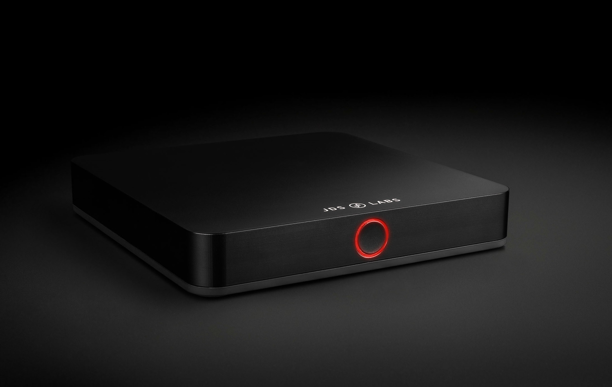

EL DAC II+ only $299 now, click the picture to buy it!
We designed the Element Line for precision fit and function. EL DAC II+ furthers the exceptional performance of its predecessor with relay muting, an XMOS based UAC2 engine with PCM and DSD support, transformer isolated coaxial input, and a higher performance optical input.
Optionally add a BT5 Module, or add Balanced Outputs for the flexibility of connecting to any amplifier. Stack with EL Amp II+ or EL Amp II+ Balanced for single button switching between headphones and speakers.
Simplified Audio, Re-engineered
FEATURES
MEMS Oscillator
EL DAC II+'s USB engine is clocked by an SiTime MEMS oscillator, delivering pristine jitter.
USB Audio Class 2
EL DAC II+ supports up to 32/384kHz PCM over a custom XMOS XU208 based UAC2 engine. While we claim no measurable superiority of high sampling rates, UAC2 and ASIO support satisfy your pursuit of bitperfect listening.
Light Ring
Enjoy the presence of your EL DAC II+ with front and center mode selection via a touch-sensitive light ring
Transformer Isolated S/PDIF
Coaxial S/PDIF input is isolated using a Pulse transformer to minimize the possibility of ground loop noise.
Relay Muting
Microprocessor controlled relays are standard in EL DAC II+ so that power up and input mode changes are free of audible transients.
Externally Powered
EL DAC II+ is powered by a perfected supply network, with an external AC transformer and 14 regulators that ensure consistent rail voltage and super low ripple. Never be bothered by USB hubs or OS power difficulties again.